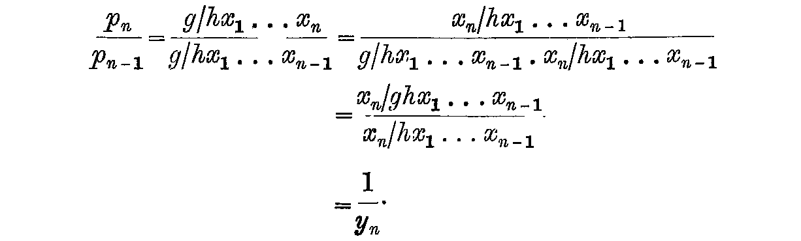
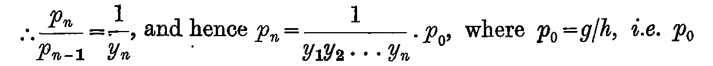
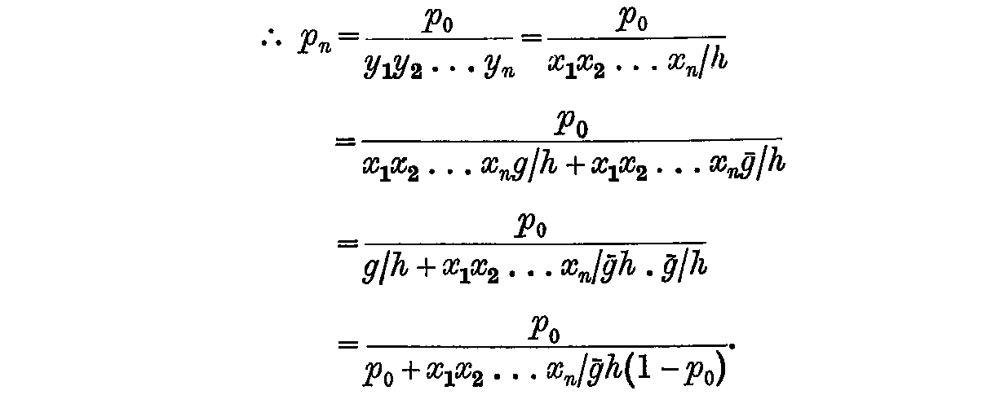
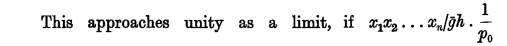
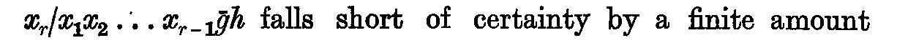

Chapter XX "The Value of Multiplication of Instances, or Pure Induction"
J. M. Keynes, A Treatise on Probability (London: Macmillan, 1921), first edition, pp. 233–241 (Cornell copy, PDF pp. 253–261). Formula atlas: every ledger row of the chapter beside the printed line it records.
| Ledger rows | 40 |
|---|---|
| Formulas | 30 (display 15, inline 15; items 30, numbered 0) |
| Formulas by Lean status | ✓15 ≈7 ✎2 未6 |
| Notation | 10 (with a Lean counterpart 10) |
| Reference rows | 0 |
Every count on this page is computed from the census ledger, which is built from the page images of the 1921 first edition only (no translation, OCR or e-text is used to count). A formula is an expression containing a relation sign (=, ≠, <, >, ≤, ≥, ≡ ⊃, → and their printed variants, including formulas inside figures, tables and footnotes, and formulas quoted from other authors); a display formula counts one per printed line, so a chain of equalities set over three lines counts three, and an inline formula counts one per expression. A compound expression without a relation sign (such as a/h, g(φ, f) or x1x2…xn/ġh) is counted separately as notation; a bare symbol, even with subscripts, primes or bars, is not counted. Footnote formulas follow the same rule, and a formula reprinted on another page is counted again. The Lean column of a formula row takes one of four values, fixed mechanically: ✓ the printed relation appears as stated in a theorem (only the names of bound variables, Lean notation and the layout of subscripts may differ); ≈ a theorem states an algebraically equivalent form (cleared denominators, a definition substituted, a change of variables); ✎ the printed line is refuted or not derivable, and a corrected form is proved; 未 none of these (a line inside a proof, a definition only, or no counterpart).
ch20-001
- Transcription
x₁x₂ . . . xₙ- Lean
- Nphase9a/C (事例の連言 x₁…xₙ)
- Anchor words
let/represent instances of g.- Remarks
- F20.1 の導入文
- Crop
- folio 235, x 125–1335, y 506–555 (full-size scan pixels)
ch20-002
- Transcription
x₁/gh = 1,- Lean
- ✓phase9a/Instances (定理の仮定 hx)
- Anchor words
Then- Remarks
- F20.1
- Crop
- folio 235, x 125–1335, y 559–607 (full-size scan pixels)
ch20-003
- Transcription
x₂/gh = 1- Lean
- ✓phase9a/Instances (定理の仮定 hx)
- Anchor words
x₁/gh = 1,(直前)- Remarks
- F20.1
- Crop
- folio 235, x 125–1335, y 559–607 (full-size scan pixels)
ch20-004
- Transcription
. . . xₙ/gh = 1 ;- Lean
- ✓phase9a/Instances (定理の仮定 hx)
- Anchor words
given g, that is to say(直後)- Remarks
- F20.1。三つ目は省略点の後。帰結 x₁…xₙ/gh = 1 は phase9a/conj_certain
- Crop
- folio 235, x 125–1335, y 559–607 (full-size scan pixels)
ch20-005
- Transcription
g/hx₁x₂ . . . xₙ- Lean
- Nphase9a/p
- Anchor words
to determine the probability- Remarks
- F20.2
- Crop
- folio 235, x 125–1335, y 660–708 (full-size scan pixels)
ch20-006
- Transcription
x₁/h = x₂/h = . . . = xₙ/h.- Lean
- 未(def だけ: 述語 phase9a/EquallyLikely はどの定理文にも現れない)
- Anchor words
with greater reliance than any other, i.e.- Remarks
- F20.3
- Crop
- folio 235, x 125–1335, y 1083–1128 (full-size scan pixels)
ch20-007
- Transcription
g/hx₁x₂ . . . xₙ = pₙ- Lean
- ✓phase9a/p (def 本体)
- Anchor words
Write- Remarks
- F20.4
- Crop
- folio 235, x 125–1335, y 1158–1203 (full-size scan pixels)
ch20-008
- Transcription
x_{n+1}/hx₁x₂ . . . xₙ = y_{n+1} ;- Lean
- ✓phase9a/y (def 本体)
- Anchor words
and- Remarks
- F20.5
- Crop
- folio 235, x 125–1335, y 1228–1274 (full-size scan pixels)
ch20-009

- Transcription
pₙ/p_{n−1} = (g/hx₁ . . . xₙ) / (g/hx₁ . . . x_{n−1}) = (xₙ/hx₁ . . . x_{n−1}) / (g/hx₁ . . . x_{n−1} . xₙ/hx₁ . . . x_{n−1})- Lean
- ✎phase9a/th_20_6_cor (第 1 連言肢); 反駁 phase9a/ErratumE_III_1.printed_line2_false
- Anchor words
then- Remarks
- F20.6 第 1 行。第 2 の等号の分子は
xₙ/hx₁ . . . x_{n−1}でg脱落 (索引 E-III-1、分類 F)。分数横線が分子より左右に長い。th_20_6_cor 第 1 連言肢は分子を g を復した結合確率 gxₙ/hx₁ . . . x_{n−1} に替えて述べる。印刷形が成り立つのは pₙ = 1 のときに限る (phase9a/th_20_6_src)。第 1 の等号は定義 p の展開 - Crop
- folio 235, x 125–1335, y 1341–1696 (full-size scan pixels)
ch20-010
- Transcription
= (xₙ/ghx₁ . . . x_{n−1}) / (xₙ/hx₁ . . . x_{n−1})- Lean
- ✎phase9a/th_20_6_cor (第 2 連言肢); 反駁 phase9a/ErratumE_III_1.printed_line2_false
- Anchor words
then(ブロック 2 行目)- Remarks
- F20.6 第 2 行。補則 8 の既知の裁定 (ch20-010 = ✎)。印刷ではこの行の左項は ch20-009 の第 2 項 (g 脱落) で、th_20_6_cor 第 2 連言肢は左項を g を復した形に替えて述べる (印刷どおりの左項では等号は成り立たない: 左辺 1/pₙ₋₁、右辺 1/yₙ)
- Crop
- folio 235, x 125–1335, y 1341–1696 (full-size scan pixels)
ch20-011
- Transcription
= 1/yₙ .- Lean
- ≈phase9a/th_20_6_cor (第 3 連言肢; 略記 yₙ の代入)
- Anchor words
then(ブロック 3 行目)- Remarks
- F20.6 第 3 行。左項 (ch20-010 の右辺) の分子は印刷どおりで、th_20_6_cor 第 3 連言肢
PrI (x (n+1)) (iand g (iand (C x n) h)) / y (n+1) = 1 / y (n+1)に現れる。分母 xₙ/hx₁ . . . x_{n−1} は Keynes の略記 y で書かれ、略記の代入は補則 8 の「定義の代入」に当たるので ≈ (細則 6、司令塔裁定 2026-10-25; 第 3 回は ✓; 添字のずらし n ↔ n+1)。連鎖の両端 pₙ/p_{n−1} = 1/yₙ は phase9a/th_20_6_lines134 (ch20-012) - Crop
- folio 235, x 125–1335, y 1341–1696 (full-size scan pixels)
ch20-012

- Transcription
∴ pₙ/p_{n−1} = 1/yₙ,- Lean
- ✓phase9a/th_20_6_lines134
- Reprint of
- ch20-011
- Anchor words
and hence(直後)- Remarks
- F20.7。ch20-009〜011 の連鎖の両端を ∴ で再掲。印刷は行頭 ∴ から散文に続く行 (分数は横線)。添字のずらし n ↔ n+1。乗法形 p_{n+1} · y_{n+1} = pₙ は phase9a/th_20_6
- Crop
- folio 235, x 125–1335, y 1716–1816 (full-size scan pixels)
ch20-013
- Transcription
pₙ = (1/(y₁y₂ . . . yₙ)) . p₀,- Lean
- ≈phase9a/th_20_7_src (略記 p₀ の代入)
- Anchor words
and hence- Remarks
- F20.7。条件 y₁…yₙ ≠ 0 は Lean 側で付す。定理文は p₀ を PrI g h と展開し (Keynes の略記の代入 = 補則 8 の「定義の代入」なので ≈: 細則 6、司令塔裁定 2026-10-25; 第 3 回は ✓)、y₁y₂ . . . yₙ を ∏ で書く
- Crop
- folio 235, x 125–1335, y 1716–1816 (full-size scan pixels)
ch20-014
- Transcription
p₀ = g/h,- Lean
- ✓phase9a/p_zero
- Anchor words
where/, i.e. p₀- Remarks
- F20.7 (p₀ の定義)
- Crop
- folio 235, x 125–1335, y 1716–1816 (full-size scan pixels)
ch20-015
- Transcription
φ(x) ≡ ' x can be inferred from h '- Lean
- 未(対応なし: 脚注の一般化記法)
- Anchor words
and we put- Remarks
- F20.8。被定義項は引用符つきの語句
- Crop
- folio 235, x 125–1335, y 1957–1993 (full-size scan pixels)
ch20-016
- Transcription
f(x) ≡ x,- Lean
- 未(対応なし: 脚注の一般化記法)
- Anchor words
and/, then- Remarks
- F20.8
- Crop
- folio 235, x 125–1335, y 1957–1993 (full-size scan pixels)
ch20-017
- Transcription
g(φ, f) ≡ h.- Lean
- 未(対応なし: 脚注の一般化記法)
- Anchor words
then/Since- Remarks
- F20.8。第19章の記法 g(φ, f)
- Crop
- folio 235, x 125–1335, y 1957–1993 (full-size scan pixels)
ch20-018
- Transcription
pₙ > p_{n−1}- Lean
- ✓phase9a/th_20_9_src
- Anchor words
It follows, therefore, that- Remarks
- F20.9。索引 F20.9-a (S/C: 前提 p_{n−1} > 0, x₁…x_{n−1}/h ≠ 0 を補う)。前提の必要性は phase9a/th_20_9_iff, th_20_9_needs_p_pos, th_20_9_J_zero
- Crop
- folio 236, x 125–1335, y 216–262 (full-size scan pixels)
ch20-019
- Transcription
yₙ ≠ 1.- Lean
- ✓phase9a/th_20_9_src (仮定 hy)
- Anchor words
so long as- Remarks
- F20.9。≠ は
=に縦棒 - Crop
- folio 236, x 125–1335, y 216–262 (full-size scan pixels)
ch20-020
- Transcription
x₁x₂ . . . xₙ/h = xₙ/hx₁x₂ . . . x_{n−1} . x₁x₂ . . . x_{n−1}/h- Lean
- ≈phase9a/J_succ (略記 yₙ の代入)
- Anchor words
Further,- Remarks
- F20.10 第 1 行。行末右端に遊離したピリオド 1 個 (原寸で確認)。定理文
J (n+1) = y (n+1) * J nは xₙ/hx₁ . . . x_{n−1} を Keynes の略記 y で (略記の代入 = 補則 8 の「定義の代入」なので ≈: 細則 6、司令塔裁定 2026-10-25; 第 3 回は ✓)、x₁ . . . xₙ/h を Lean 側の略名 J で書く (細則 6 裁定事項 A′) - Crop
- folio 236, x 125–1335, y 335–483 (full-size scan pixels)
ch20-021
- Transcription
= yₙ . x₁x₂ . . . x_{n−1}/h- Lean
- ✓phase9a/J_succ
- Anchor words
Further,(ブロック 2 行目)- Remarks
- F20.10 第 2 行。x₁x₂ . . . x_{n−1}/h は Lean 側の略名 J (細則 6 裁定事項 A′)
- Crop
- folio 236, x 125–1335, y 335–483 (full-size scan pixels)
ch20-022
- Transcription
= yₙy_{n−1} . . . y₁.- Lean
- ✓phase9a/th_20_10_src
- Anchor words
Further,(ブロック 3 行目)- Remarks
- F20.10 第 3 行。定理文
J n = ∏ i ∈ range n, y (i+1)(左項 x₁ . . . xₙ/h は略名 J: 細則 6 裁定事項 A′; yₙy_{n−1} . . . y₁ は Finset 上の ∏ で書き、順序を持たない) - Crop
- folio 236, x 125–1335, y 335–483 (full-size scan pixels)
ch20-023

- Transcription
∴ pₙ = p₀/(y₁y₂ . . . yₙ) = p₀/(x₁x₂ . . . xₙ/h)- Lean
- ≈phase9a/th_20_11_first (分母を払った積の形); 第 1 等号は phase9a/th_20_7_src ((1/∏y) · p₀ の形)
- Reprint of
- ch20-013
- Anchor words
= yₙy_{n−1} . . . y₁.(直前)- Remarks
- F20.11 第 1 行 (等号 2 個、印刷 1 行)。第 2 等号の商の形 p₀/(x₁ . . . xₙ/h) は、定理文では分母を払った積の形 pₙ · x₁ . . . xₙ/h = p₀ (th_20_11_first) でしか現れない。第 1 等号 p₀/(y₁ . . . yₙ) も th_20_7_src では (1/∏y) · p₀ の形。補則 8 の「分母を払った形」に当たるので行として ≈ (読み手役 第 2 回の申し送り)
- Crop
- folio 236, x 125–1335, y 519–989 (full-size scan pixels)
ch20-024
- Transcription
= p₀/(x₁x₂ . . . xₙg/h + x₁x₂ . . . xₙḡ/h)- Lean
- 未(phase9a/th_20_11_denom の証明内)
- Anchor words
∴ pₙ =(ブロック 2 行目)- Remarks
- F20.11 第 2 行。ḡ の棒あり。def_IX_i の事例
- Crop
- folio 236, x 125–1335, y 519–989 (full-size scan pixels)
ch20-025
- Transcription
= p₀/(g/h + x₁x₂ . . . xₙ/ḡh . ḡ/h)- Lean
- 未(phase9a/th_20_11_denom の証明内)
- Anchor words
∴ pₙ =(ブロック 3 行目)- Remarks
- F20.11 第 3 行。
g/hは棒なし、ḡh,ḡ/hは棒あり。ḡ/h を 1 − p₀ に置き換える前の形 - Crop
- folio 236, x 125–1335, y 519–989 (full-size scan pixels)
ch20-026
- Transcription
= p₀/(p₀ + x₁x₂ . . . xₙ/ḡh(1 − p₀)).- Lean
- ≈phase9a/th_20_11_src (条件 分母 ≠ 0; 略記 p₀ の代入)
- Anchor words
∴ pₙ =(ブロック 4 行目)- Remarks
- F20.11 最終形。定理文は p₀ を PrI g h と展開し (Keynes の略記の代入 = 補則 8 の「定義の代入」なので ≈: 細則 6、司令塔裁定 2026-10-25; 第 3 回は ✓)、x₁ . . . xₙ/ḡh を Lean 側の略名 Q で書く (細則 6 裁定事項 A′)。分母 0 の場合は phase9a/th_20_11_den_zero, Witness_F20_11_den
- Crop
- folio 236, x 125–1335, y 519–989 (full-size scan pixels)
ch20-027

- Transcription
x₁x₂ . . . xₙ/ḡh . 1/p₀- Lean
- Nphase9a/Q, phase9a/th_20_12_src, phase9a/limit_of_Q
- Anchor words
as a limit, if/approaches zero as a limit- Remarks
- F20.12。
1/p₀は行内で横線分数 - Crop
- folio 236, x 125–1335, y 999–1097 (full-size scan pixels)
ch20-028
- Transcription
pₙ > p_{n−1}- Lean
- ✓phase9a/th_20_13_src
- Reprint of
- ch20-018
- Anchor words
Since- Remarks
- F20.13 (F20.9 の再掲)
- Crop
- folio 236, x 125–1335, y 2179–2212 (full-size scan pixels)
ch20-029
- Transcription
yₙ ≠ 1.- Lean
- ✓phase9a/th_20_13_src (仮定 hy)
- Reprint of
- ch20-019
- Anchor words
so long as- Remarks
- F20.13
- Crop
- folio 236, x 125–1335, y 2179–2212 (full-size scan pixels)
ch20-030
- Transcription
x₁x₂ . . . xₙ/ḡh- Lean
- Nphase9a/Q, phase9a/th_20_14
- Anchor words
as n increases,/becomes small compared with p₀- Remarks
- F20.14
- Crop
- folio 237, x 125–1335, y 351–398 (full-size scan pixels)
ch20-031
- Transcription
x_r/x₁x₂ . . . x_{r−1}ḡh < 1 − ε- Lean
- ✓phase9a/th_20_15_src (仮定 hq)
- Anchor words
increased, provided that- Remarks
- F20.15。第22章 folio 254 では
= 1 − ε(索引 E-III-2)。仮定 hq は左辺を Lean 側の略名 q で書く (細則 6 裁定事項 A′; 添字のずらし r ↔ r+1) - Crop
- folio 237, x 125–1335, y 718–763 (full-size scan pixels)
ch20-032
- Transcription
p₀ > η,- Lean
- ≈phase9a/th_20_15_src (仮定 hp0; 略記 p₀ の代入)
- Anchor words
for all values of r, and- Remarks
- F20.15。仮定
η < PrI g h(p₀ を展開: Keynes の略記の代入 = 補則 8 の「定義の代入」なので ≈、細則 6、司令塔裁定 2026-10-25; 第 3 回は ✓;>と<の左右) - Crop
- folio 237, x 125–1335, y 792–837 (full-size scan pixels)
ch20-033
- Transcription
x₁x₂ . . . xₙ/ḡh = xₙ/x₁x₂ . . . x_{n−1}ḡh . x₁x₂ . . . x_{n−1}/ḡh < (1 − ε)ⁿ,- Lean
- ✓phase9a/th_20_16_src
- Anchor words
is as follows :- Remarks
- F20.16。等号と不等号を 1 行に含む (印刷 1 行)。
x_{n−1}ḡhは添字 1 と ḡ が接触 (詰め組、原寸で n−1 と判読)。定理文は等号と不等号を連言 2 個に分け、Lean 側の略名 Q, q で書く (細則 6 裁定事項 A′) - Crop
- folio 237, x 125–1335, y 1865–1907 (full-size scan pixels)
ch20-034
- Transcription
p₀ > η- Lean
- ≈phase9a/th_20_16_src (仮定 hp0; 略記 p₀ の代入)
- Reprint of
- ch20-032
- Anchor words
where ε is finite and- Remarks
- F20.16。仮定
η < PrI g h(ch20-032 と同じく p₀ を展開: 細則 6、司令塔裁定 2026-10-25; 第 3 回は ✓) - Crop
- folio 237, x 125–1335, y 1915–1952 (full-size scan pixels)
ch20-035
- Transcription
(1 − ε)ⁿ- Lean
- Nphase9a/th_20_17_pow
- Anchor words
such that both- Remarks
- F20.17
- Crop
- folio 237, x 125–1335, y 1960–2030 (full-size scan pixels)
ch20-036
- Transcription
(1 − ε)ⁿ/η- Lean
- Nphase9a/th_20_17_src, phase9a/th_20_17_bound
- Anchor words
and/are less than any given finite quantity- Remarks
- F20.17。行内で横線分数
- Crop
- folio 237, x 125–1335, y 1960–2030 (full-size scan pixels)
ch20-037
- Transcription
p₁p₂ . . . p_r- Lean
- Nphase9a/KeynesLimit
- Anchor words
a series of probabilities- Remarks
- F20.18
- Crop
- folio 237, x 125–1335, y 2068–2103 (full-size scan pixels)
ch20-038
- Transcription
ε . γ,- Lean
- Nphase9a/KeynesLimit, phase9a/γ_certainty, phase9a/th_20_18_src
- Anchor words
is less than/where γ is the measure of certainty.- Remarks
- F20.18
- Crop
- folio 237, x 125–1335, y 2176–2210 (full-size scan pixels)
ch20-039

- Transcription
x_r/x₁x₂ . . . x_{r−1}ḡh- Lean
- Nphase9a/q, phase9a/th_20_19_src
- Reprint of
- ch20-031
- Anchor words
are (1) that/falls short of certainty- Remarks
- F20.19。条件の言語的再掲
- Crop
- folio 238, x 125–1335, y 611–656 (full-size scan pixels)
ch20-040
- Transcription
x_r/x₁x₂ . . . x_{r−1}ḡh- Lean
- Nphase9a/q, phase9a/th_20_20_src, phase9a/Q_le_of_tail
- Reprint of
- ch20-031
- Anchor words
(1) That/falls short of certainty- Remarks
- F20.20。「beyond a specified value s」; (2) の
p_sは裸記号 - Crop
- folio 238, x 125–1335, y 862–907 (full-size scan pixels)